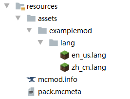
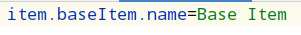

版本信息
使用的系统：windows10 x64
使用的JDK: jdk1.8.0_251
你使用的IDE：IntelliJ IDEA
你使用的IDE版本:2020.1.2
Forge版本: 1.12.2-14.23.5.2854
Minecraft版本: 1.12.2
出错图
错误情况简述
modid为examplemod，将物品BaseItem的UnlocalizedName设置为baseItem后，lang语言文件没有被正确读取，希望得到解决。以下为资源文件夹结构和lang文件内容：


报错日志
[15:30:59] [main/ERROR] [FML]: Apache Maven library folder was not in the format expected. Using default libraries directory.
[15:30:59] [main/ERROR] [FML]: Full: C:\Users\15575\.gradle\caches\modules-2\files-2.1\org.apache.maven\maven-artifact\3.5.3\7dc72b6d6d8a6dced3d294ed54c2cc3515ade9f4\maven-artifact-3.5.3.jar
[15:30:59] [main/ERROR] [FML]: Trimmed: c:/users/15575/.gradle/caches/modules-2/files-2.
1/org.apache.maven/maven-artifact/3.5.3/
[15:31:02] [main/ERROR] [FML]: FML appears to be missing any signature data. This is not a good thing
[15:31:08] [Client thread/ERROR] [FML]: Unable to read a class file correctly
java.lang.IllegalArgumentException: null
at org.objectweb.asm.ClassReader.<init>(ClassReader.java:185) ~[asm-debug-all-5.2.jar:5.2]
at org.objectweb.asm.ClassReader.<init>(ClassReader.java:168) ~[asm-debug-all-5.2.jar:5.2]
at org.objectweb.asm.ClassReader.<init>(ClassReader.java:439) ~[asm-debug-all-5.2.jar:5.2]
at net.minecraftforge.fml.common.discovery.asm.ASMModParser.<init>(ASMModParser.java:57) [ASMModParser.class:?]
at net.minecraftforge.fml.common.discovery.JarDiscoverer.findClassesASM(JarDiscoverer.java:102) [JarDiscoverer.class:?]
at net.minecraftforge.fml.common.discovery.JarDiscoverer.discover(JarDiscoverer.java:77) [JarDiscoverer.class:?]
at net.minecraftforge.fml.common.discovery.ContainerType.findMods(ContainerType.java:47) [ContainerType.class:?]
at net.minecraftforge.fml.common.discovery.ModCandidate.explore(ModCandidate.java:74) [ModCandidate.class:?]
at net.minecraftforge.fml.common.discovery.ModDiscoverer.identifyMods(ModDiscoverer.java:93) [ModDiscoverer.class:?]
at net.minecraftforge.fml.common.Loader.identifyMods(Loader.java:427) [Loader.class:?]
at net.minecraftforge.fml.common.Loader.loadMods(Loader.java:568) [Loader.class:?]
at net.minecraftforge.fml.client.FMLClientHandler.beginMinecraftLoading(FMLClientHandler.java:232) [FMLClientHandler.class:?]
at net.minecraft.client.Minecraft.init(Minecraft.java:467) [Minecraft.class:?]
at net.minecraft.client.Minecraft.run(Minecraft.java:378) [Minecraft.class:?]
at net.minecraft.client.main.Main.main(Main.java:118) [Main.class:?]
at sun.reflect.NativeMethodAccessorImpl.invoke0(Native Method) ~[?:1.8.0_251]
at sun.reflect.NativeMethodAccessorImpl.invoke(NativeMethodAccessorImpl.java:62) ~[?:1.8.0_251]
at sun.reflect.DelegatingMethodAccessorImpl.invoke(DelegatingMethodAccessorImpl.java:43) ~[?:1.8.0_251]
at java.lang.reflect.Method.invoke(Method.java:498) ~[?:1.8.0_251]
at net.minecraft.launchwrapper.Launch.launch(Launch.java:135) [launchwrapper-1.12.jar:?]
at net.minecraft.launchwrapper.Launch.main(Launch.java:28) [launchwrapper-1.12.jar:?]
at sun.reflect.NativeMethodAccessorImpl.invoke0(Native Method) ~[?:1.8.0_251]
at sun.reflect.NativeMethodAccessorImpl.invoke(NativeMethodAccessorImpl.java:62) ~[?:1.8.0_251]
at sun.reflect.DelegatingMethodAccessorImpl.invoke(DelegatingMethodAccessorImpl.java:43) ~[?:1.8.0_251]
at java.lang.reflect.Method.invoke(Method.java:498) ~[?:1.8.0_251]
at net.minecraftforge.legacydev.Main.start(Main.java:86) [legacydev-0.2.3.1-fatjar.jar:0.2.3.1+4+372be23]
at net.minecraftforge.legacydev.MainClient.main(MainClient.java:29) [legacydev-0.2.3.1-fatjar.jar:0.2.3.1+4+372be23]
[15:31:08] [Client thread/ERROR] [FML]: There was a problem reading the entry module-info.class in the jar C:\Users\15575\.gradle\caches\modules-2\files-2.1\org.ow2.asm\asm-util\6.2\a9690730f92cc79eeadc20e400ebb41eccce10b1\asm-util-6.2.jar - probably a corrupt zip
net.minecraftforge.fml.common.LoaderException: java.lang.IllegalArgumentException
at net.minecraftforge.fml.common.discovery.asm.ASMModParser.<init>(ASMModParser.java:63) ~[ASMModParser.class:?]
at net.minecraftforge.fml.common.discovery.JarDiscoverer.findClassesASM(JarDiscoverer.java:102) [JarDiscoverer.class:?]
at net.minecraftforge.fml.common.discovery.JarDiscoverer.discover(JarDiscoverer.java:77) [JarDiscoverer.class:?]
at net.minecraftforge.fml.common.discovery.ContainerType.findMods(ContainerType.java:47) [ContainerType.class:?]
at net.minecraftforge.fml.common.discovery.ModCandidate.explore(ModCandidate.java:74) [ModCandidate.class:?]
at net.minecraftforge.fml.common.discovery.ModDiscoverer.identifyMods(ModDiscoverer.java:93) [ModDiscoverer.class:?]
at net.minecraftforge.fml.common.Loader.identifyMods(Loader.java:427) [Loader.class:?]
at net.minecraftforge.fml.common.Loader.loadMods(Loader.java:568) [Loader.class:?]
at net.minecraftforge.fml.client.FMLClientHandler.beginMinecraftLoading(FMLClientHandler.java:232) [FMLClientHandler.class:?]
at net.minecraft.client.Minecraft.init(Minecraft.java:467) [Minecraft.class:?]
at net.minecraft.client.Minecraft.run(Minecraft.java:378) [Minecraft.class:?]
at net.minecraft.client.main.Main.main(Main.java:118) [Main.class:?]
at sun.reflect.NativeMethodAccessorImpl.invoke0(Native Method) ~[?:1.8.0_251]
at sun.reflect.NativeMethodAccessorImpl.invoke(NativeMethodAccessorImpl.java:62) ~[?:1.8.0_251]
at sun.reflect.DelegatingMethodAccessorImpl.invoke(DelegatingMethodAccessorImpl.java:43) ~[?:1.8.0_251]
at java.lang.reflect.Method.invoke(Method.java:498) ~[?:1.8.0_251]
at net.minecraft.launchwrapper.Launch.launch(Launch.java:135) [launchwrapper-1.12.jar:?]
at net.minecraft.launchwrapper.Launch.main(Launch.java:28) [launchwrapper-1.12.jar:?]
at sun.reflect.NativeMethodAccessorImpl.invoke0(Native Method) ~[?:1.8.0_251]
at sun.reflect.NativeMethodAccessorImpl.invoke(NativeMethodAccessorImpl.java:62) ~[?:1.8.0_251]
at sun.reflect.DelegatingMethodAccessorImpl.invoke(DelegatingMethodAccessorImpl.java:43) ~[?:1.8.0_251]
at java.lang.reflect.Method.invoke(Method.java:498) ~[?:1.8.0_251]
at net.minecraftforge.legacydev.Main.start(Main.java:86) [legacydev-0.2.3.1-fatjar.jar:0.2.3.1+4+372be23]
at net.minecraftforge.legacydev.MainClient.main(MainClient.java:29) [legacydev-0.2.3.1-fatjar.jar:0.2.3.1+4+372be23]
Caused by: java.lang.IllegalArgumentException
at org.objectweb.asm.ClassReader.<init>(ClassReader.java:185) ~[asm-debug-all-5.2.jar:5.2]
at org.objectweb.asm.ClassReader.<init>(ClassReader.java:168) ~[asm-debug-all-5.2.jar:5.2]
at org.objectweb.asm.ClassReader.<init>(ClassReader.java:439) ~[asm-debug-all-5.2.jar:5.2]
at net.minecraftforge.fml.common.discovery.asm.ASMModParser.<init>(ASMModParser.java:57) ~[ASMModParser.class:?]
... 23 more
[15:31:25] [Client thread/ERROR] [FML]: Exception loading model for variant examplemod:base_item#inventory for item "examplemod:base_item", normal location exception:
net.minecraftforge.client.model.ModelLoaderRegistry$LoaderException: Exception loading model examplemod:item/base_item with loader VanillaLoader.INSTANCE, skipping
at net.minecraftforge.client.model.ModelLoaderRegistry.getModel(ModelLoaderRegistry.java:161) ~[ModelLoaderRegistry.class:?]
at net.minecraftforge.client.model.ModelLoader.loadItemModels(ModelLoader.java:302) ~[ModelLoader.class:?]
at net.minecraft.client.renderer.block.model.ModelBakery.loadVariantItemModels(ModelBakery.java:175) ~[ModelBakery.class:?]
at net.minecraftforge.client.model.ModelLoader.setupModelRegistry(ModelLoader.java:151) ~[ModelLoader.class:?]
at net.minecraft.client.renderer.block.model.ModelManager.onResourceManagerReload(ModelManager.java:28) [ModelManager.class:?]
at net.minecraft.client.resources.SimpleReloadableResourceManager.registerReloadListener(SimpleReloadableResourceManager.java:121) [SimpleReloadableResourceManager.class:?]
at net.minecraft.client.Minecraft.init(Minecraft.java:513) [Minecraft.class:?]
at net.minecraft.client.Minecraft.run(Minecraft.java:378) [Minecraft.class:?]
at net.minecraft.client.main.Main.main(Main.java:118) [Main.class:?]
at sun.reflect.NativeMethodAccessorImpl.invoke0(Native Method) ~[?:1.8.0_251]
at sun.reflect.NativeMethodAccessorImpl.invoke(NativeMethodAccessorImpl.java:62) ~[?:1.8.0_251]
at sun.reflect.DelegatingMethodAccessorImpl.invoke(DelegatingMethodAccessorImpl.java:43) ~[?:1.8.0_251]
at java.lang.reflect.Method.invoke(Method.java:498) ~[?:1.8.0_251]
at net.minecraft.launchwrapper.Launch.launch(Launch.java:135) [launchwrapper-1.12.jar:?]
at net.minecraft.launchwrapper.Launch.main(Launch.java:28) [launchwrapper-1.12.jar:?]
at sun.reflect.NativeMethodAccessorImpl.invoke0(Native Method) ~[?:1.8.0_251]
at sun.reflect.NativeMethodAccessorImpl.invoke(NativeMethodAccessorImpl.java:62) ~[?:1.8.0_251]
at sun.reflect.DelegatingMethodAccessorImpl.invoke(DelegatingMethodAccessorImpl.java:43) ~[?:1.8.0_251]
at java.lang.reflect.Method.invoke(Method.java:498) ~[?:1.8.0_251]
at net.minecraftforge.legacydev.Main.start(Main.java:86) [legacydev-0.2.3.1-fatjar.jar:0.2.3.1+4+372be23]
at net.minecraftforge.legacydev.MainClient.main(MainClient.java:29) [legacydev-0.2.3.1-fatjar.jar:0.2.3.1+4+372be23]
Caused by: java.io.FileNotFoundException: examplemod:models/item/base_item.json
at net.minecraft.client.resources.SimpleReloadableResourceManager.getResource(SimpleReloadableResourceManager.java:69) ~[SimpleReloadableResourceManager.class:?]
at net.minecraft.client.renderer.block.model.ModelBakery.loadModel(ModelBakery.java:334) ~[ModelBakery.class:?]
at net.minecraftforge.client.model.ModelLoader.access$1400(ModelLoader.java:115) ~[ModelLoader.class:?]
at net.minecraftforge.client.model.ModelLoader$VanillaLoader.loadModel(ModelLoader.java:861) ~[ModelLoader$VanillaLoader.class:?]
at net.minecraftforge.client.model.ModelLoaderRegistry.getModel(ModelLoaderRegistry.java:157) ~[ModelLoaderRegistry.class:?]
... 20 more
[15:31:25] [Client thread/ERROR] [FML]: Exception loading model for variant examplemod:base_item#inventory for item "examplemod:base_item", blockstate location exception:
net.minecraftforge.client.model.ModelLoaderRegistry$LoaderException: Exception loading model examplemod:base_item#inventory with loader VariantLoader.INSTANCE, skipping
at net.minecraftforge.client.model.ModelLoaderRegistry.getModel(ModelLoaderRegistry.java:161) ~[ModelLoaderRegistry.class:?]
at net.minecraftforge.client.model.ModelLoader.loadItemModels(ModelLoader.java:296) ~[ModelLoader.class:?]
at net.minecraft.client.renderer.block.model.ModelBakery.loadVariantItemModels(ModelBakery.java:175) ~[ModelBakery.class:?]
at net.minecraftforge.client.model.ModelLoader.setupModelRegistry(ModelLoader.java:151) ~[ModelLoader.class:?]
at net.minecraft.client.renderer.block.model.ModelManager.onResourceManagerReload(ModelManager.java:28) [ModelManager.class:?]
at net.minecraft.client.resources.SimpleReloadableResourceManager.registerReloadListener(SimpleReloadableResourceManager.java:121) [SimpleReloadableResourceManager.class:?]
at net.minecraft.client.Minecraft.init(Minecraft.java:513) [Minecraft.class:?]
at net.minecraft.client.Minecraft.run(Minecraft.java:378) [Minecraft.class:?]
at net.minecraft.client.main.Main.main(Main.java:118) [Main.class:?]
at sun.reflect.NativeMethodAccessorImpl.invoke0(Native Method) ~[?:1.8.0_251]
at sun.reflect.NativeMethodAccessorImpl.invoke(NativeMethodAccessorImpl.java:62) ~[?:1.8.0_251]
at sun.reflect.DelegatingMethodAccessorImpl.invoke(DelegatingMethodAccessorImpl.java:43) ~[?:1.8.0_251]
at java.lang.reflect.Method.invoke(Method.java:498) ~[?:1.8.0_251]
at net.minecraft.launchwrapper.Launch.launch(Launch.java:135) [launchwrapper-1.12.jar:?]
at net.minecraft.launchwrapper.Launch.main(Launch.java:28) [launchwrapper-1.12.jar:?]
at sun.reflect.NativeMethodAccessorImpl.invoke0(Native Method) ~[?:1.8.0_251]
at sun.reflect.NativeMethodAccessorImpl.invoke(NativeMethodAccessorImpl.java:62) ~[?:1.8.0_251]
at sun.reflect.DelegatingMethodAccessorImpl.invoke(DelegatingMethodAccessorImpl.java:43) ~[?:1.8.0_251]
at java.lang.reflect.Method.invoke(Method.java:498) ~[?:1.8.0_251]
at net.minecraftforge.legacydev.Main.start(Main.java:86) [legacydev-0.2.3.1-fatjar.jar:0.2.3.1+4+372be23]
at net.minecraftforge.legacydev.MainClient.main(MainClient.java:29) [legacydev-0.2.3.1-fatjar.jar:0.2.3.1+4+372be23]
Caused by: net.minecraft.client.renderer.block.model.ModelBlockDefinition$MissingVariantException
at net.minecraft.client.renderer.block.model.ModelBlockDefinition.getVariant(ModelBlockDefinition.java:83) ~[ModelBlockDefinition.class:?]
at net.minecraftforge.client.model.ModelLoader$VariantLoader.loadModel(ModelLoader.java:1175) ~[ModelLoader$VariantLoader.class:?]
at net.minecraftforge.client.model.ModelLoaderRegistry.getModel(ModelLoaderRegistry.java:157) ~[ModelLoaderRegistry.class:?]
... 20 more
相关代码
BaseItem.java
package com.example.examplemod.item;
import net.minecraft.item.Item;
class BaseItem extends Item {
public BaseItem() {
this.setUnlocalizedName("baseItem");
this.setRegistryName("base_item");
this.setMaxStackSize(64);
}
}
ItemRegistryHandler.java
package com.example.examplemod.item;
import net.minecraft.item.Item;
import net.minecraftforge.event.RegistryEvent;
import net.minecraftforge.fml.common.Mod;
import net.minecraftforge.fml.common.eventhandler.SubscribeEvent;
import net.minecraftforge.registries.IForgeRegistry;
@Mod.EventBusSubscriber
public class ItemRegistryHandler {
public static final BaseItem BASE_ITEM = new BaseItem();
@SubscribeEvent
public static void onRegister(RegistryEvent.Register<Item> event) {
IForgeRegistry<Item> registry = event.getRegistry();
registry.register(BASE_ITEM);
}
}
en_us.lang
item.baseItem.name=Base Item
pack.mcmeta
{
"pack": {
"description": "examplemod resources",
"pack_format": 3,
"_comment": "A pack_format of 3 should be used starting with Minecraft 1.11. All resources, including language files, should be lowercase (eg: en_us.lang). A pack_format of 2 will load your mod resources with LegacyV2Adapter, which requires language files to have uppercase letters (eg: en_US.lang)."
}
}

{kind=link}